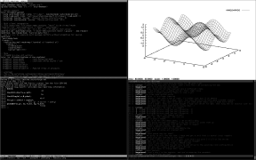
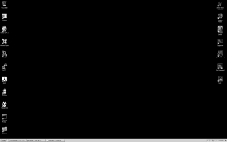

Projects
Infrastructure
VPS: macroexpand.com is a RootBSD-hosted VPS, running FreeBSD 10.0-REL x64 on their "Iota" plan (512MB RAM, 20GB disk space, and 250GB/mo. bandwidth). This server has been around since about 2000 in various incarnations, most recently as cellblock.homeunix.com (now defunct), and is also accessible as muze.x.rootbsd.net.
FreeBSD workstation: The main development workstation and general usage machine (where this site was until recently hosted) runs FreeBSD 10.0-REL x64. Normally, it'd still be hosted there, but our current ISP blocks outbound ports 80 and 443.

[1920x1200, 53KB]
{kind=link}
This uses the xmonad WM to primarily manage urxvt terminals which run zsh shells and an emacs -nw session under GNU screen. In Nov 2009, this machine was rebuilt to use no moving parts and minimal power consumption. Our primary exocortex currently consists of:
Motherboard: Intel Desktop Board D945GSEJT (onboard Atom n270 and Intel 945GME)
RAM: Super Talent 2GB 200-Pin DDR2 SO-DIMM DDR2 800
SSD: OCZ Vertex Series OCZSSD2-1VTX30G 30GB
Case: Morex T-1610
Keyboard: IBM Model M
Monitor: Dell UltraSharp U2410
Windows workstation: This Windows machine was rebuilt in 2013 for games and hosting VMs. It runs Windows 7 Home Edition. It's nothing special, but usable:

[1920x1200, 79KB]
{kind=link}
This shares peripherals via KVM switch with the FreeBSD workstation. Unlike it, however, it was built with some minor beef:
Motherboard: Intel BOXDZ77SL50K LGA 1155 Intel Z77 ATX
CPU: Intel Core i3-3240 Ivy Bridge 3.4GHz LGA 1155
Heatsink: Cooler Master Hyper 212 EVO RR-212E-20PK-R2
Vidcard: EVGA 02G-P4-2660-KR GeForce GTX 660 2GB
RAM: Corsair XMS3 16GB (2 x 8GB) 240-Pin DDR3 1600
SSD: Intel 520 Series SSDSC2CW180A3K5 2.5"
PWS: SeaSonic SSR-450RM 450W ATX12V / EPS12V
DVD-RW: Lite-On Slim 8X DVD Burner
Case: Lian Li PC-V1100BPlus II Black Aluminum ATX
Case fans: Scythe S-FLEX SFF21E 120mm x3
HD: Western Digital VelociRaptor WD3000GLFS 300GB
HD: Seagate Barracuda 7200.10 ST3750640AS 750GB
Apart from these workstations, the LAN sometimes includes an EEEpc 1000 running some GNU/Linux distribution.